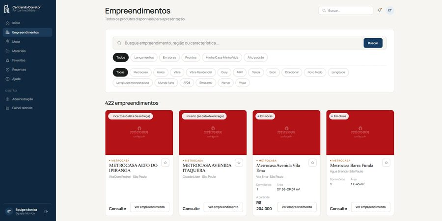
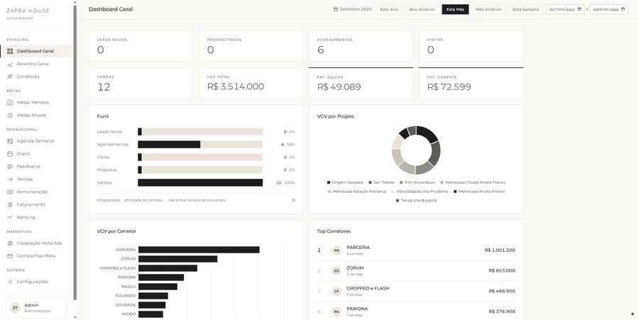
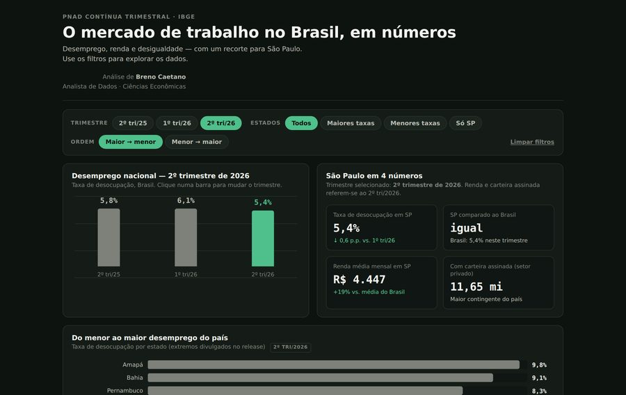
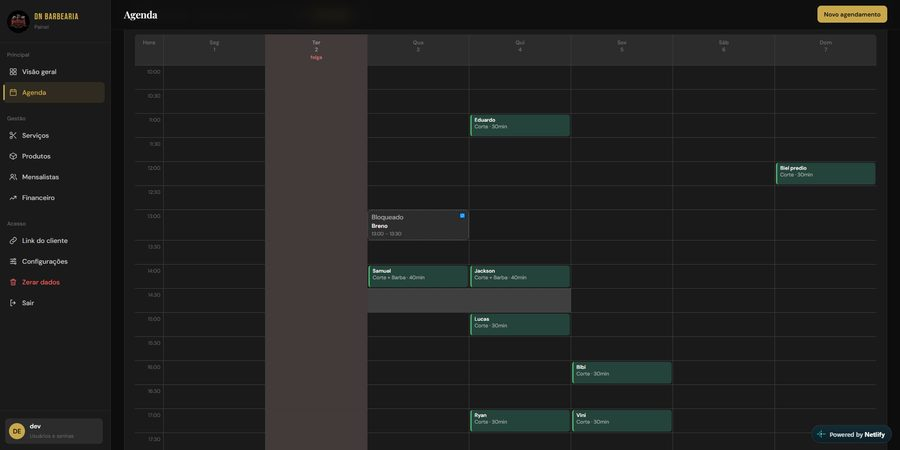

Dados & BI
Dashboards, indicadores, análises e visualização de dados para apoiar decisões.
Analista de Dados focado em BI, automação de processos e transformação de dados em soluções práticas para o negócio.
Sou profissional de dados e tecnologia. Meu trabalho é pegar informação dispersa e processo manual e devolver algo que o time consiga usar para decidir — um indicador confiável, um painel que abre rápido, uma rotina que deixou de ser feita à mão.
Na prática, isso envolve análise de dados, criação de dashboards, automação de processos, definição de indicadores e desenvolvimento de soluções internas para operações comerciais e financeiras.
Curso Ciências Econômicas no Centro Universitário FAM, com conclusão prevista para dezembro de 2026.
Dashboards, indicadores, análises e visualização de dados para apoiar decisões.
Automação de tarefas e processos repetitivos utilizando tecnologia para reduzir trabalho manual.
Organização, análise e melhoria de processos operacionais.
Criação de sistemas, ferramentas internas e soluções web para necessidades específicas.
Sistema de acompanhamento e gestão comercial para equipes imobiliárias.

Dashboard para acompanhamento de indicadores comerciais. Reúne funil de conversão, VGV por projeto e por corretor, metas e ranking da equipe numa tela só.

Automação de rotinas e distribuição de indicadores.
Dashboard interativo com dados da PNAD Contínua do IBGE. Filtros de trimestre, grupo de estados e recorte demográfico, com indicadores que recalculam conforme a seleção.
Abrir dashboard ao vivo (abre em nova aba)
Sistema web de agenda, clientes e financeiro, desenvolvido como projeto próprio. Os dados são modelados pensando em análise, com indicadores gerados a partir do uso.

Projetos de desenvolvimento web, sistemas e soluções digitais. Espaço reservado para os próximos trabalhos.
Atuação direta com o gerente de vendas, com foco em indicadores e desempenho de uma equipe de 34 corretores. Inclui análise de KPIs comerciais, organização da rotina de acompanhamento e desenvolvimento de plataformas internas.
Acompanhamento e análise de dados de produtos financeiros, apoiando a gestão na priorização de demandas. Monitoramento de transações de PIX, análise da base de usuários ativos de cartão de crédito e construção de indicadores e relatórios usados na tomada de decisão.
Atuação direta com o gerente de vendas, dando visibilidade aos resultados de uma equipe de 20 corretores. Estruturação de controles de desempenho, indicadores comerciais e metas, além do desenvolvimento da Plataforma de Performance Comercial e da Plataforma de Controle de Comissões.
Estou aberto a oportunidades profissionais, projetos e conversas sobre dados, BI, automação e tecnologia.